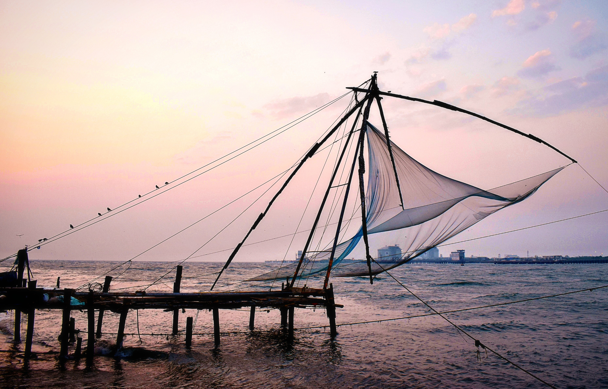

Kerala, southwestern coastal state of India. It is a small state, constituting only about 1 percent of the total area of the country. Kerala stretches for about 360 miles (580 km) along the Malabar Coast, varying in width from roughly 20 to 75 miles (30 to 120 km). It is bordered by the states of Karnataka (formerly Mysore) to the north and Tamil Nadu to the east and by the Arabian Sea to the south and west; it also surrounds Mahe, a segment of the state of Puducherry, on the northwestern coast. The capital is Thiruvananthapuram (Trivandrum). Although isolated from the Indian interior by the mountainous belt of the Western Ghats, Kerala has been exposed to many foreign influences via its long coastline; consequently, the state has developed a unique culture within the subcontinent, not only with a diverse religious tradition but also with its own language, Malayalam. Also notable is the high social status that continues to be accorded to women of Kerala, owing to the former strength of a matrilineal kinship system. Area 15,005 square miles (38,863 square km). Pop. (2011) 33,387,677.